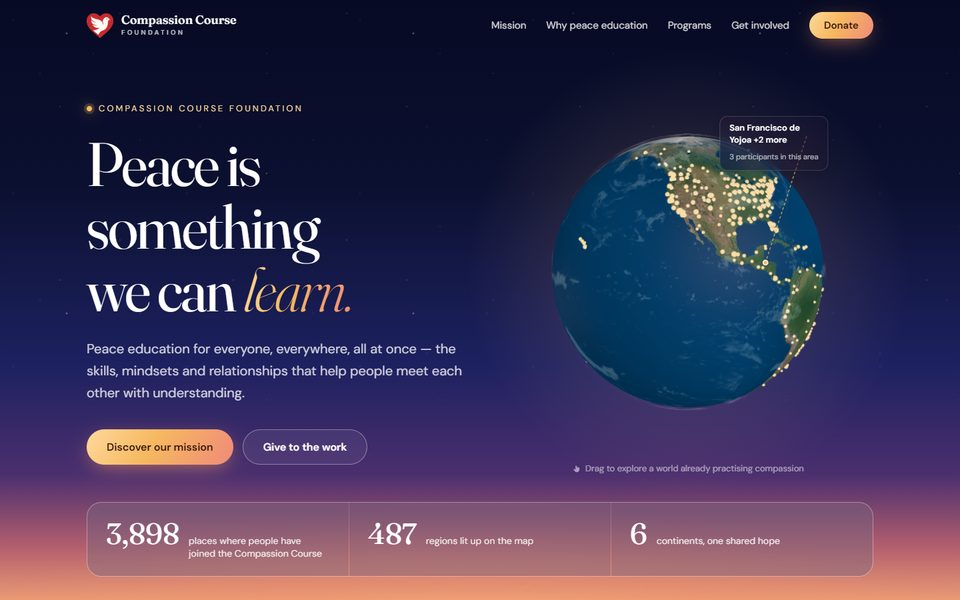
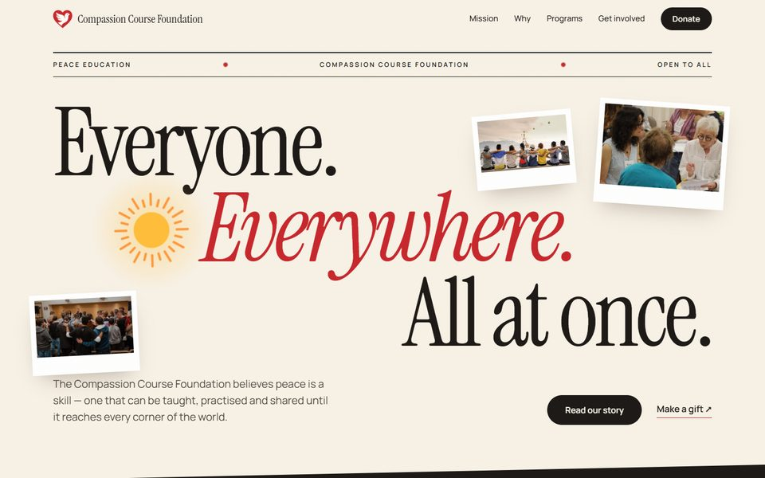
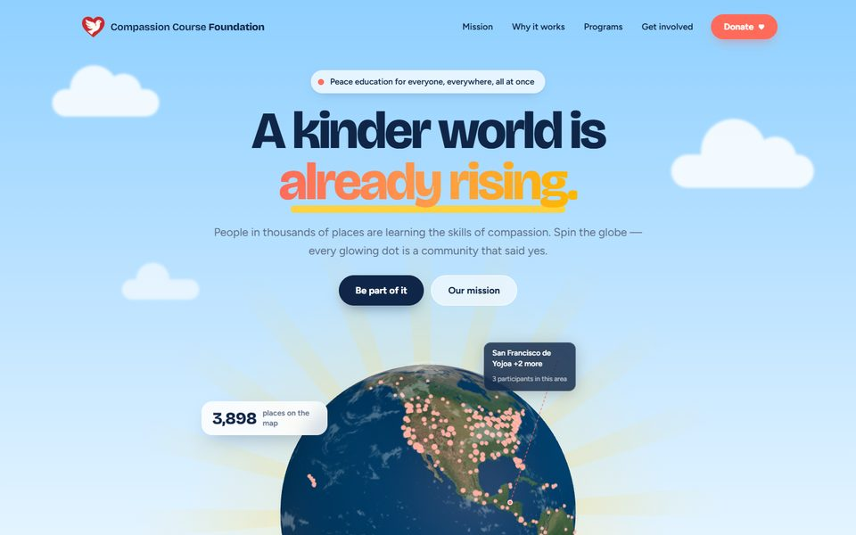
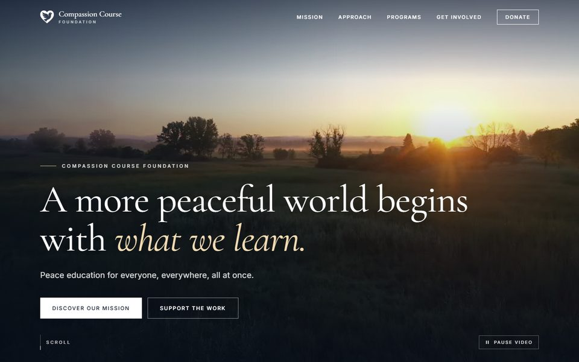
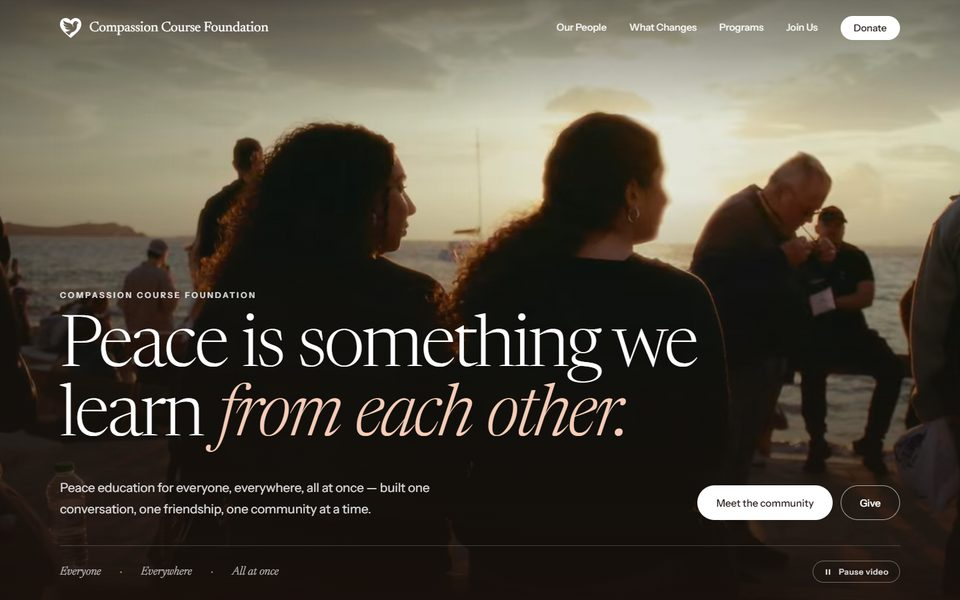

Dawn
Night sky giving way to sunrise. The participant globe rises at the horizon, ringed by starlight and warm amber. Elegant serif type, quietly cinematic.

Morning Paper
Editorial and typographic. Huge headlines on warm paper, a sun turning in the middle of the tagline, polaroid photos of real gatherings, and the globe set like a newspaper figure.

Bright Horizon
Clear blue sky, sunshine and coral. The globe comes up like a sun with floating stats around it, then playful bento tiles and rounded cards. The most openly optimistic of the set.

Meridian
Quiet, premium and editorial. A full-screen sunrise film behind white serif type, then ivory pages, deep ink and champagne-gold hairlines, with the globe in its own section. The most polished and institutional of the set.

Kindred
Meridian’s polish with a human focus. The full-screen hero film is a montage of real people: a sunset gathering, friends in a circle, a group hug by the water. Then an editorial photo mosaic of the community with the globe beneath it, in warm terracotta and cream.